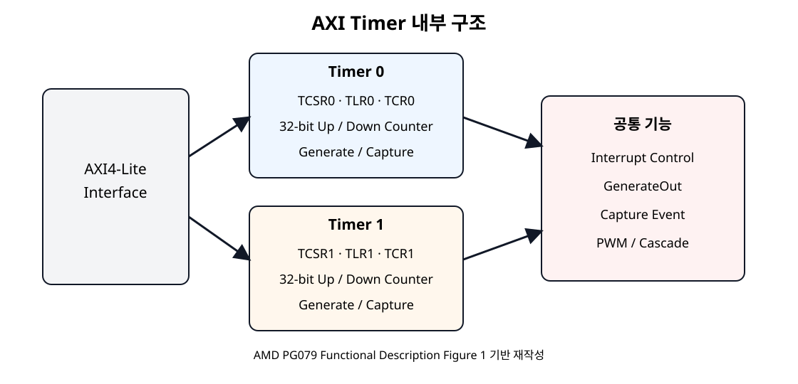
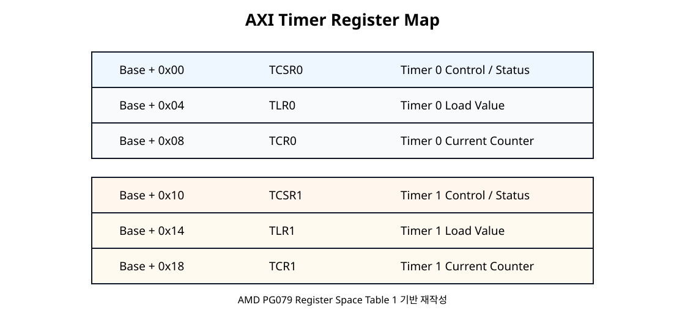
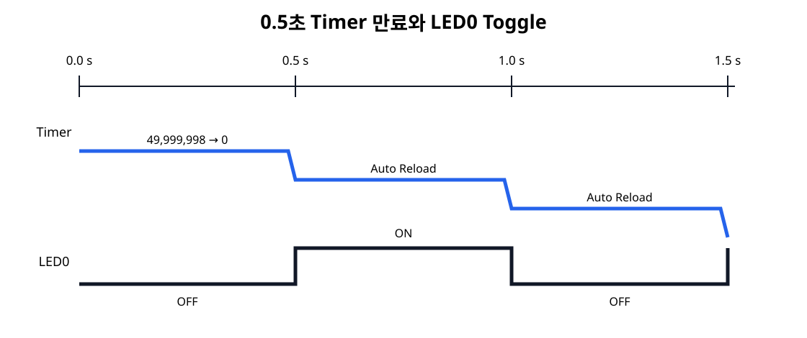

Timer
100 MHz Clock을 50,000,000회 세어 약 0.5초를 만든다.
Basys3 SoC + NPU · SoC 08
100 MHz AXI Clock을 직접 세어 0.5초 간격을 만들고, Timer 만료를 MicroBlaze V가 Polling으로 확인해 AXI GPIO의 LED0를 반전한다. Clock → Counter → Register → Software → LED 동작이 하나의 경로로 연결된다.
100 MHz Clock을 50,000,000회 세어 약 0.5초를 만든다.
Timer 만료 Flag를 Polling으로 확인한다.
만료할 때마다 LED0를 반전해 약 1초 Blink 주기를 만든다.
LED0는 0.5초마다 상태가 바뀐다. 따라서 OFF 0.5초 → ON 0.5초 → OFF 0.5초로 반복되며 한 번의 완전한 ON/OFF Cycle은 약 1초이다.
07장 UART 통신을 실제 보드에서 검증한 뒤 진행합니다. 이 장의 LED 시간표는 실기 확인 이전에는 예상 결과입니다.
SoC 06의 AXI GPIO와 SoC 07의 AXI UART Lite는 그대로 유지하고 axi_timer_0만 추가한다.
Timer에는 별도의 외부 FPGA Pin이 필요하지 않는다.

AXI Timer는 AXI4-Lite Slave Interface와 두 개의 Timer/Counter Module을 가진다. 각 Timer는 Load Register, Counter Register, Control/Status Register를 갖는다.
MicroBlaze V의 Peripheral AXI 경로를 활성화하여 IP를 연결한다. 하드웨어 변경 후 XSA와 V용 Platform/BSP를 갱신하고 생성된 xparameters.h의 심볼을 사용한다.
| 구분 | Timer 0 | Timer 1 |
|---|---|---|
| Control/Status | TCSR0 | TCSR1 |
| Load | TLR0 | TLR1 |
| Counter | TCR0 | TCR1 |
| SoC 08 | 사용 | 미사용 |
두 Counter를 Cascade하면 64-bit Counter로 사용할 수 있지만 이번 장에서는 Timer 0 하나만 사용한다.
PG079는 Timer Module의 Clock Rate가 s_axi_aclk이며 별도의 Prescaling을 하지 않는다고 설명한다. 현재 시스템 Clock은 100 MHz이므로 Timer도 100 MHz를 직접 센다.
| Mode | 기능 | SoC 08 |
|---|---|---|
| Generate | 설정한 시간 간격 만료 생성 | 사용 |
| Capture | 외부 Event 시 Counter 값 저장 | 미사용 |
| PWM | Timer 0/1을 이용한 PWM 생성 | 미사용 |
| Cascade | 두 Counter를 64-bit로 결합 | 미사용 |
이번 장은 Generate + Down Count + Auto Reload로 구성한다.
07장 프로젝트가 실제 Echo까지 검증되면 File → Project → Save As로 08장 작업본을 만듭니다. 프로젝트명 예시는 soc08_axi_timer입니다. 최종 저장 위치는 GUI에서 확인합니다.
.xpr, .bd, XDC를 삭제하거나 이동하지 않습니다.Sources → Design Sources에서 BD를 열고 필요한 경우 File → Save Block Design As로 별도 이름으로 저장합니다. 소스·제약이 07장 경로를 직접 참조하지 않는지 확인합니다.
Diagram의 + (Add IP) → AXI Timer를 검색해 더블클릭합니다.
기대 화면:axi_timer_0가 생기고 GPIO/UART는 유지됩니다.axi_timer_0 더블클릭 → Timer/Counter 폭을 32-bit로 확인하고, Timer 0만 이번 코드에 사용합니다. 64-bit Cascade를 사용하지 않습니다. OK.
상단 Run Connection Automation에서 axi_timer_0/S_AXI만 선택합니다. CPU M_AXI_DP의 기존 axi_smc를 재사용합니다.
axi_gpio_0/S_AXI, axi_uartlite_0/S_AXI, axi_timer_0/S_AXI가 각각 CPU AXI 경로에 연결되었는지 선으로 확인합니다.
axi_timer_0/s_axi_aclk는 기존 100 MHz AXI Clock에, s_axi_aresetn은 기존 Active-Low Peripheral Reset에 연결합니다. Timer interrupt는 이번 장에서 연결하지 않습니다.
Block Design의 Address Editor 탭을 클릭합니다.
axi_timer_0/S_AXI가 Unassigned이면 Assign All 또는 해당 행의 주소 할당 기능을 실행합니다. 이미 할당돼 있다면 무작정 재설정하지 않습니다.
BRAM, 06장 GPIO, 07장 UART의 실제 Base/High Address와 Timer 범위를 비교합니다. 기존 배치는 유지하고 Timer 주소·Range를 기록합니다.
기대 화면: Timer를 포함한 AXI 주소가 Assigned이며 충돌하지 않습니다.보조 L05의 0x4003_0000은 별도 프로젝트 예시 주소입니다.

| Offset | Register | 역할 |
|---|---|---|
+0x00 | TCSR0 | Timer 0 Control / Status |
+0x04 | TLR0 | Timer 0 Load Value |
+0x08 | TCR0 | Timer 0 현재 Counter |
+0x10 | TCSR1 | Timer 1 Control / Status |
+0x14 | TLR1 | Timer 1 Load Value |
+0x18 | TCR1 | Timer 1 현재 Counter |
| Bit | 이름 | SoC 08 |
|---|---|---|
| 8 | T0INT | Timer 만료 Event Flag · Write 1 to Clear |
| 7 | ENT0 | Timer Enable |
| 6 | ENIT0 | Interrupt Output Enable · 0 |
| 5 | LOAD0 | TLR0 값을 TCR0에 Load |
| 4 | ARHT0 | Auto Reload |
| 1 | UDT0 | 1 = Down Count |
| 0 | MDT0 | 0 = Generate Mode |
PG079의 32-bit Down-count Generate Mode 식을 그대로 사용한다.
따라서 코드의 TIMER_RESET_VALUE는 49,999,998이다.

XTC_AUTO_RELOAD_OPTION을 사용하면 Counter가 만료된 뒤 Load Value를 다시 불러와 반복 Count한다.
if (XTmrCtr_IsExpired(&Timer, TIMER0)) {
clear_timer_expired();
expire_count++;
led_state ^= LED0_MASK;
XGpio_DiscreteWrite(&Gpio, LED_CHANNEL, led_state);
}XTmrCtr_IsExpired()는 TCSR0의 만료 Event Flag를 Polling한다. Interrupt 출력은 활성화하지 않는다.
비트 XOR 연산 led_state ^= 0x1로 LED0만 반전한다.
AXI Timer 자체는 외부 Pin이 없다. LED 출력은 기존 SoC 06 AXI GPIO를 그대로 사용하므로 기존 Basys3 Switch/LED XDC를 유지한다.
Ctrl+S → Validate Design(F6). 오류나 Critical Warning을 점검하고 원인 없는 경고를 무시하지 않습니다.
08장 BD가 별도라면 Create HDL Wrapper 후 Set as Top을 확인합니다. 기존 UART/GPIO/Clock/Reset 외부 포트 및 XDC는 유지합니다.
Generate Bitstream 성공 후 File → Export → Export Hardware에서 Include bitstream을 선택하고 08장 XSA를 별도로 저장합니다.
기대 화면: 08장 Bitstream과 새 XSA 파일이 생성됩니다.Vitis Workspace /home/jung/soc/sw에서 File → New Component → Platform을 열어 08장 XSA로 새 Platform을 만듭니다. 07장 Platform은 덮어쓰지 않습니다.
Platform Build 후 xparameters.h에 Timer 주소 매크로가 생성됐는지 확인하고, 19절의 코드를 사용하는 새 Application을 만듭니다.
아래 코드는 SoC 08 실습을 위해 작성한 교육용 코드이며 Timer Driver API는 AMD embeddedsw의 Polling Example과 현재 Driver 정의를 기준으로 사용한다.
#include "xparameters.h"
#include "xtmrctr.h"
#include "xgpio.h"
#include "xstatus.h"
#include "xil_types.h"
/*
* SoC 08 - AXI Timer Polling + AXI GPIO LED Blink
*
* Timer clock : 100 MHz
* Clock period: 10 ns
*
* Down-count Generate Mode:
* interval = (TLR0 + 2) * 10 ns
*
* 0.5 s:
* 50,000,000 clocks
* TLR0 = 50,000,000 - 2
* = 49,999,998
* = 0x02FAF07E
*
* Timer expires every 0.5 s.
* LED0 toggles at every expiration.
* Therefore LED0 ON/OFF full cycle is about 1 s.
*/
#define TIMER0 0U
#define LED_CHANNEL 1U
#define LED0_MASK 0x00000001U
#define TIMER_CLOCK_HZ 100000000U
#define TIMER_INTERVAL_MS 500U
#define TIMER_TICKS_500MS 50000000U
#define TIMER_RESET_VALUE (TIMER_TICKS_500MS - 2U)
#ifndef SDT
#define TIMER_DEVICE_ID XPAR_TMRCTR_0_DEVICE_ID
#define GPIO_DEVICE_ID XPAR_GPIO_0_DEVICE_ID
#else
#define TIMER_BASEADDR XPAR_XTMRCTR_0_BASEADDR
#define GPIO_BASEADDR XPAR_XGPIO_0_BASEADDR
#endif
static XTmrCtr Timer;
static XGpio Gpio;
volatile u32 led_state = 0U;
volatile u32 expire_count = 0U;
volatile u32 timer_value = 0U;
static int init_gpio(void)
{
#ifndef SDT
return XGpio_Initialize(&Gpio, GPIO_DEVICE_ID);
#else
return XGpio_Initialize(&Gpio, GPIO_BASEADDR);
#endif
}
static int init_timer(void)
{
int status;
#ifndef SDT
status = XTmrCtr_Initialize(&Timer, TIMER_DEVICE_ID);
#else
status = XTmrCtr_Initialize(&Timer, TIMER_BASEADDR);
#endif
if (status != XST_SUCCESS) {
return status;
}
status = XTmrCtr_SelfTest(&Timer, TIMER0);
if (status != XST_SUCCESS) {
return status;
}
/*
* Polling Generate Mode:
* - Down Count
* - Auto Reload
* - Interrupt output is NOT enabled
*/
XTmrCtr_SetOptions(
&Timer,
TIMER0,
XTC_DOWN_COUNT_OPTION | XTC_AUTO_RELOAD_OPTION
);
XTmrCtr_SetResetValue(&Timer, TIMER0, TIMER_RESET_VALUE);
XTmrCtr_Start(&Timer, TIMER0);
return XST_SUCCESS;
}
static void clear_timer_expired(void)
{
u32 csr;
/*
* T0INT is Write-1-to-Clear.
* Keep the current control bits and write 1 only to the event flag.
*/
csr = XTmrCtr_GetControlStatusReg(Timer.BaseAddress, TIMER0);
XTmrCtr_SetControlStatusReg(
Timer.BaseAddress,
TIMER0,
csr | XTC_CSR_INT_OCCURED_MASK
);
}
int main(void)
{
int status;
status = init_gpio();
if (status != XST_SUCCESS) {
return XST_FAILURE;
}
status = init_timer();
if (status != XST_SUCCESS) {
return XST_FAILURE;
}
/* LED0 initially OFF */
XGpio_DiscreteWrite(&Gpio, LED_CHANNEL, led_state);
while (1) {
/* Debugger에서 현재 down-counter 값을 관찰할 수 있다. */
timer_value = XTmrCtr_GetValue(&Timer, TIMER0);
if (XTmrCtr_IsExpired(&Timer, TIMER0)) {
clear_timer_expired();
expire_count++;
/* LED0 toggle */
led_state ^= LED0_MASK;
XGpio_DiscreteWrite(&Gpio, LED_CHANNEL, led_state);
}
}
return XST_SUCCESS;
}
| API | Hardware 동작 |
|---|---|
XTmrCtr_SetResetValue() | TLR0에 시작값 설정 |
XTmrCtr_SetOptions() | TCSR0의 Down Count / Auto Reload 등 설정 |
XTmrCtr_Start() | Timer Enable 후 Count 시작 |
XTmrCtr_GetValue() | TCR0 현재값 Read |
XTmrCtr_IsExpired() | TCSR0의 Event Flag 확인 |
XTmrCtr_SetControlStatusReg() | T0INT에 1을 써서 만료 Flag Clear |
19절의 Timer+GPIO main.c를 08장 Platform에 빌드하고 해당 ELF 파일의 생성 여부를 확인합니다.
Vivado의 Hardware Manager에서 08장 Bitstream을 다운로드합니다. 07장 Bitstream을 다시 내려받지 않습니다.
Vitis 실행 구성에서 08장 ELF와 microblaze_riscv_0를 확인하고 실행합니다. Debug 문제 발생 시 기존에 관측된 launch.json 탭 열기 절차를 참고합니다.
LED0가 약 0.5초마다 ON/OFF 반전하는지 관찰합니다. expire_count, timer_value, led_state를 실제 Debugger에서 비교합니다.
| 경과 시간 | expire_count | LED0 |
|---|---|---|
| 시작 | 0 | OFF |
| 약 0.5 s | 1 | ON |
| 약 1.0 s | 2 | OFF |
| 약 1.5 s | 3 | ON |
| 약 2.0 s | 4 | OFF |
| 변수 | 확인 내용 |
|---|---|
timer_value | 현재 Down Counter 값 |
expire_count | 0.5초 만료 횟수 |
led_state | 0 / 1 Toggle 상태 |
timer_value는 매우 빠르게 감소하므로 Breakpoint에서 매번 정확히 같은 값으로 보이지 않는 것이 정상이다.
Timer는 Clock을 Hardware에서 독립적으로 세지만, Polling에서는 CPU가 AXI Read를 반복하여 Event Flag를 확인한다.
| 증상 | 원인 후보 | 확인 |
|---|---|---|
| LED가 너무 빠르게 깜빡임 | Clock/Load 계산 오류 | 100 MHz, 49,999,998 확인 |
| LED가 한 번만 변함 | Auto Reload 미설정 | XTC_AUTO_RELOAD_OPTION |
| LED가 계속 빠르게 반전 | 만료 Flag를 Clear하지 않음 | T0INT Write-1-to-Clear 확인 |
| Timer가 움직이지 않음 | Enable/Clock/Reset 문제 | XTmrCtr_Start, s_axi_aclk |
| Build Macro 없음 | XSA/Platform 미갱신 | xparameters.h |
| GPIO LED가 안 켜짐 | 기존 SoC 06 AXI GPIO/XDC 문제 | Channel 1 Output, LED XDC 확인 |
| Interrupt가 발생하지 않음 | 정상 | SoC 08은 Polling, Interrupt는 SoC 09 |
49,999,998 = 0x02FAF07E임을 계산할 수 있다.timer_value, expire_count, led_state를 확인했다.| 문서 | 확인 항목 |
|---|---|
| AMD PG079 · AXI Timer v2.0 · 2025-08-15 | AXI4-Lite Timer 구조, Timer Mode, Register, Counter |
| PG079 · Functional Description | 두 32-bit Timer, s_axi_aclk, Prescaling 없음 |
| PG079 · Register Space | TCSR/TLR/TCR Offset |
| PG079 · TCSR0 | T0INT, ENT0, LOAD0, ARHT0, UDT0, MDT0 |
| PG079 · Generate Mode | Down Count 식, Auto Reload Programming Sequence |
| AMD/Xilinx Timer Counter Driver API | XTmrCtr API |
| AMD embeddedsw · xtmrctr_polled_example.c | Polling Example, Classic/SDT 초기화 |
08장 프로젝트는 07장 성공본에서 File → Project → Save As를 사용해 /home/jung/soc/hw/soc08_axi_timer/soc08_axi_timer.xpr로 분리하고, 새 Block Design soc08_axi_timer.bd에 axi_timer_0를 추가했습니다. 기존 AXI GPIO·UART Lite·Local BRAM 및 XDC를 유지하고, AXI SmartConnect의 세 번째 출력으로 Timer의 S_AXI를 연결했습니다.
| 장치 | Base Address | Range |
|---|---|---|
| Local BRAM | 0x00000000 | 16 KiB |
| AXI GPIO | 0x40000000 | 64 KiB |
| AXI UART Lite | 0x40600000 | 64 KiB |
| AXI Timer | 0x41C00000 | 64 KiB |
soc08_axi_timer_wrapper.v 자동 생성, Top 지정; 포트 UART_0_rxd, UART_0_txd, btnC, clk, led_tri_o[15:0], sw_tri_i[15:0] 확인/home/jung/soc/hw/soc08_axi_timer/soc08_axi_timer_wrapper.xsasoc08_axi_timer_platform, 위치 /home/jung/soc/sw 지정standalone, CPU microblaze_riscv_0 선택하여 Platform Build 성공xparameters.h에서 XPAR_XTMRCTR_0_BASEADDR 0x41c00000, XPAR_XTMRCTR_0_CLOCK_FREQUENCY 0x05f5e100 확인(100 MHz)soc08_axi_timer 생성, 08장 Platform 및 standalone_microblaze_riscv_0 선택; Empty Application에 main.c 작성soc08_axi_timer.elf 생성 확인; 편집기 진단 표시와 실제 컴파일 성공 여부는 구분launch.json 탭을 열어 08장 .bit, 08장 .elf, microblaze_riscv_0 확인한 후 Debug 실행| 변수 | 관측값 | 해석 |
|---|---|---|
timer_value | 0x028816E6 | 카운터 현재값 |
expire_count | 0x00000025 | 37회 만료 처리 |
led_state | 0x00000001 | LED0 ON (홀수 횟수 반전) |
판정: AXI Timer → MicroBlaze V Polling → AXI GPIO → LED0 실제 동작 성공. 0.5초는 100 MHz와 TLR0 값으로 산출한 목표 간격이며 외부 계측기로 정확도를 측정한 것은 아닙니다. 디버거는 XTmrCtr_IsExpired() 함수 내부에서도 정상적으로 일시정지될 수 있습니다.
공식 근거: AMD PG079 Functional Description(원문) · AMD PG079 Generate Mode(원문) · AMD PG079 Register Space(원문)